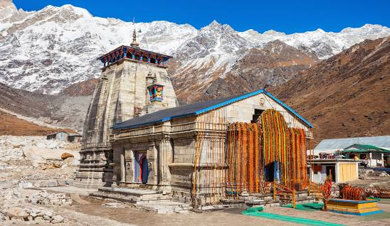

Places
Discover some of the most breathtaking and luxurious destinations with High End Travel. From tropical beaches to snow-capped mountains, our handpicked selection of destinations will take you on an unforgettable journey.
Kedarnath
Among the glorious mountain peaks that are covered with nothing but snowstorm, lies one of the holiest pilgrim sites of northern India -"Kedarnath". Famous for the ancient shrine devoted to Lord Shiva, it tenders an unflustered ambience with its colorful rhododendron woods, snow covered mountains and splendid sights of nature. This sacred city is visited by thousands of tourists from all over to seek the blessing of the lord and scout the undulating scenery of this region at an elevation of 11,755 ft above sea level. Almost all the appeals nestled in higher altitude render every bystander a fascinating and enchanting feeling. An amalgamation of devoutness and adventure is what makes it peerless and unique..
Learn moreChennai

The people of Tamil Nadu consider providing food to others a service to humanity. Thus the service in the state capital, Chennai, is first-rate. Treat your senses to some of the richest South Indian flavours in traditional dishes like sambar, rasam, fish curry or kootu. And don't forget to have a cup of full-bodied Tamil coffee, enhanced with chicory—no visit is complete without it.
Learn moreBengluru

Having evolved gradually from being the Garden city to the Silicon Valley of India, Bangalore is India's third-largest city. Bangalore is loved for its pleasant weather, beautiful parks and the many lakes here. Bangalore is renowned for its eateries, street food corners, quirky cafes, coffee roasters and pubs dotting every corner of the city, serving cuisines from all over the world. Brunches, buffets, burgers, rooftop cafes, late-night eats - Bangalore has it all. Here, one can choose to take a long stroll through the beautiful Cubbon Park, shop in the many malls or street markets or hop into one of the many acclaimed breweries for a cold and refreshing drink. There are a huge number of beautifully decorated parks in the city that are ideal for going on a morning stroll or a jog. One walk through the 300-acre Cubbon Park, or the botanical gardens of Lalbagh, and you'll know precisely why Bangalore is so famously called India's 'Garden City'. But just like every big city, the unprecedented growth of IT in Bangalore has reshaped quite a few things including rising temperatures, polluted lakes and heavily congested roads, especially in the newer areas. Aside from the central business and commercial districts (and the roads leading up to them), the neighbourhoods of Bangalore are mostly quiet and serene, especially the older parts of the city like Jayanagar and J.P Nagar.
Learn more